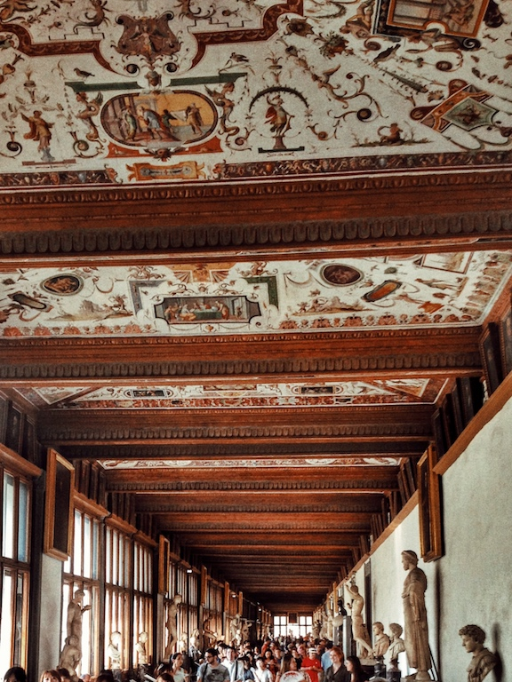

Photo by Francesca Tosolini
Most Italian museums are closed on Mondays. Museums sell tickets until 45 minutes before the closing time. So, don't arrive at the very last minute because they won't let you in, even if you show them your best smile. A museum ticket may cost between €8 and €12, with some high profile museums charging even more. Discounts are available for children and teenagers as well as for people older than 65. {This is an excerpt from chapter 7 “Churches and museums” of the eBook “Italy from the Inside. A native Italian reveals the secrets of traveling in Italy”}